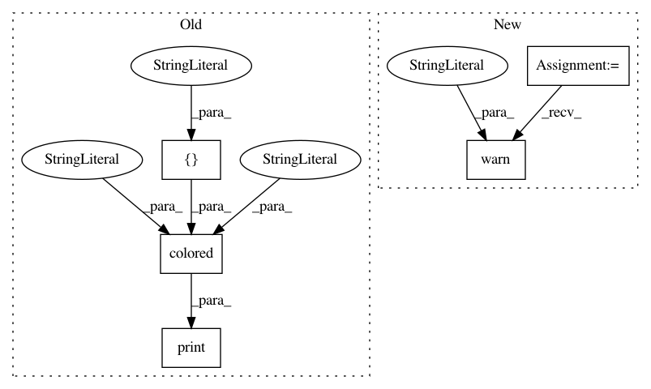

49b95ca42dc6c70e33fa32a7ee183696e4033fe2,pyprob/nn/inference_network_lstm.py,InferenceNetworkLSTM,_loss,#InferenceNetworkLSTM#Any#,132
Before Change
// print("importance_weights ", importance_weights)
// print()
if util.has_nan_or_inf(log_prob):
print(colored("Warning: NaN, -Inf, or Inf encountered in proposal log_prob.", "red", attrs=["bold"]))
print("proposal_distribution", proposal_distribution)
print("values", values)
print("log_prob", log_prob)
print("Fixing -Inf")
After Change
// print("importance_weights ", importance_weights)
// print()
if util.has_nan_or_inf(log_prob):
warnings.warn("NaN, -Inf, or Inf encountered in proposal log_prob.")
print("proposal_distribution", proposal_distribution)
print("values", values)
print("log_prob", log_prob)
print("Fixing -Inf")
In pattern: SUPERPATTERN
Frequency: 5
Non-data size: 5
Instances
Project Name: pyprob/pyprob
Commit Name: 49b95ca42dc6c70e33fa32a7ee183696e4033fe2
Time: 2020-07-19
Author: atilimgunes.baydin@gmail.com
File Name: pyprob/nn/inference_network_lstm.py
Class Name: InferenceNetworkLSTM
Method Name: _loss
Project Name: pyprob/pyprob
Commit Name: 49b95ca42dc6c70e33fa32a7ee183696e4033fe2
Time: 2020-07-19
Author: atilimgunes.baydin@gmail.com
File Name: pyprob/model.py
Class Name: Model
Method Name: posterior
Project Name: pyprob/pyprob
Commit Name: 49b95ca42dc6c70e33fa32a7ee183696e4033fe2
Time: 2020-07-19
Author: atilimgunes.baydin@gmail.com
File Name: pyprob/model.py
Class Name: Model
Method Name: _traces
Project Name: pyprob/pyprob
Commit Name: 49b95ca42dc6c70e33fa32a7ee183696e4033fe2
Time: 2020-07-19
Author: atilimgunes.baydin@gmail.com
File Name: pyprob/distributions/truncated_normal.py
Class Name: TruncatedNormal
Method Name: log_prob
Project Name: pyprob/pyprob
Commit Name: 49b95ca42dc6c70e33fa32a7ee183696e4033fe2
Time: 2020-07-19
Author: atilimgunes.baydin@gmail.com
File Name: pyprob/nn/inference_network_feedforward.py
Class Name: InferenceNetworkFeedForward
Method Name: _loss